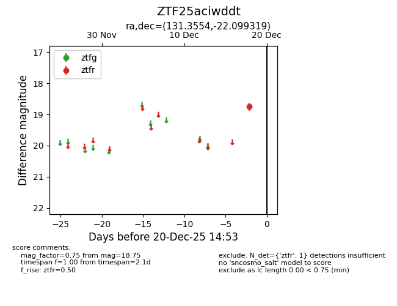
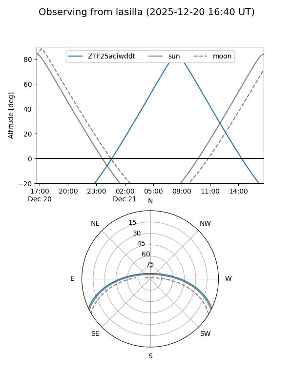
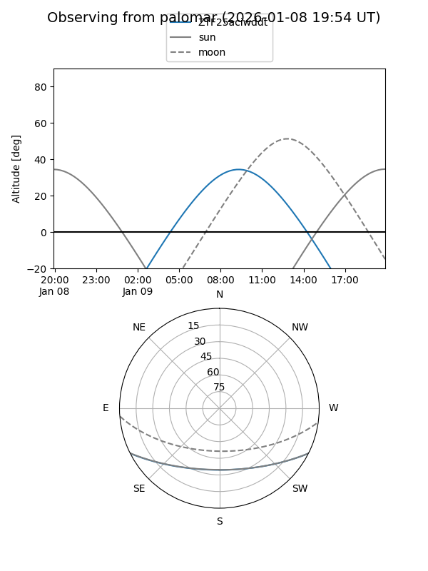

ZTF25aciwddt
Target ZTF25aciwddt at 2025-12-31 18:00
Aliases and brokers:
FINK: link
Lasair: link
ALeRCE: link
alt names
ZTF25aciwddt (ztf,fink_ztf)
Coordinates:
equatorial (ra, dec) = 131.3554,-22.09932
equatorial (HMS+DMS) = 08:45:25.29,-22:05:57.55
galactic (l, b) = (246.3059,+12.81875)
Flags:
Photometry:
last ztfr=18.75
1 ztfr detections
Lightcurve

Visibility


Additional plots